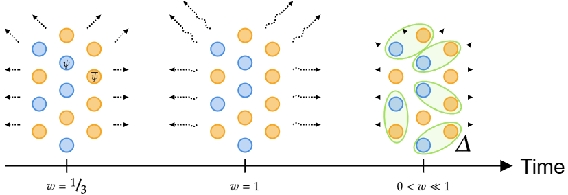

Fernando Garcia Cortez
Independent study
At the moment, I am enjoying some more advanced texts on Cosmology and Quantum Field Theory, as well as numerical methods.
Ongoing work: Cosmological CMB differentiable code
I am in the initial stages of developing a fully differentiable CMB cosmology code. Differentiability opens the door to many possibilities, such as faster parameter estimation, but most importantly, it allows us to constrain models with an immense number of parameters.
Ongoing work: BCS inspired dark matter
I am currently following the work of my senior honors thesis at the University of New Mexico about a model of dark matter based on the BCS theory of superconductivity. I am about to start working on MCMC analysis of the model, which will provide me with a statistical description of how well this model fits with observed cosmological data, as well as an estimation of the parameters of the model.
Previous work
In the past, I have worked on thermal field theory, neutrino physics in a cosmological context, applications of representation theory to quantum field theory, as well as some geophysics and photonics.